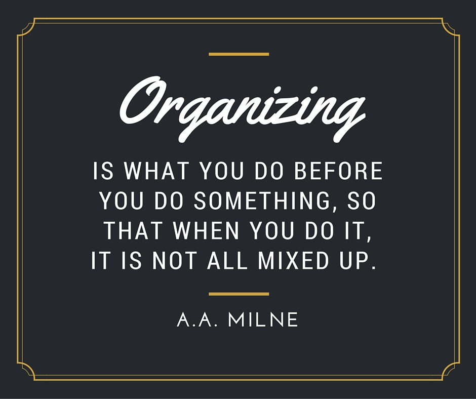
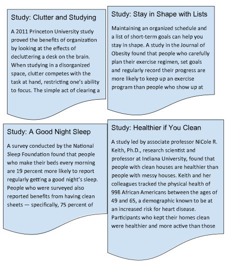
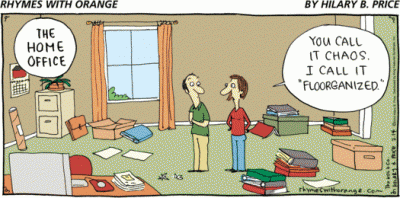

Module 2: Goal Setting and Organization
2.1 Being Organized
In this section you are going to explore...
- How Organized are You?
- Benefits to Being Organized
- Organization Systems
- Your Personal Organization System
Being Organized
The topic of ‘organization’ is quite popular right now. People strive to become organized in all facets of their lives. But what does “being organized” mean? Simply put, when you are organized, you know where various items are, you are aware of what you are doing and you definitely know where you are going. Being organized means that you are overcoming the hindrances that keep you from doing all you need to do.
Being organized is not just a term, but it is an act. To become organized is a state of mind with many actions taking place to become a person prepared for anything that happens in life.

Many people believe that they are organized, but when they are asked to locate an object or when they walk into their house and piles of papers are all around, knick-knacks scattered on various shelves and tables, mail covers the kitchen table, they suddenly realize that they aren’t organized.
How Organized Are You?
How organized are you? Do you never forget to bring anything or school? Do you hand in every assignment on time? Take this quiz to assess your organizational skills for school.
Organizational Skills Quiz
4 - Always
3 - Usually
2 - Sometimes
1 - Never
- I use a planner to keep track of my homework.
- My planner is filled in with all of my homework assignments and upcoming tests, quizzes, and projects.
- I check my planner before I leave school each day.
- I prioritize my homework assignments and plan out when I will complete each one.
- When faced with a large project or test, I break it down into smaller tasks.
- When I do my homework, I have a dedicated, neat space to work that has all the materials I need to do my assignments.
- I have enough time to complete my homework each day.
- My locker is clean and I can find what I need in it easily.
- I clean out my backpack each night.
- I put everything I need for school in my backpack and am not rushed in the morning looking for missing items.
- At school, I can easily locate any items I need to do my work, like pencils, a calculator, or books.
- When I get papers at school, I file them into a binder or folder for that class.
- I feel prepared when I walk into class.
- My teachers would say I am organized.
- My family would say I am organized.
Add up your total points for the above questions:
46 - 60 Points: You should be an organizational coach! You have well-developed strategies for organizing your materials and time. Keep up the great work!
31 - 45 Points: You have some solid organizational skills, but room for improvement. Look for times when you don't have the materials you need or feel disorganized. Ask a trusted adult to help you identify some strategies to help improve your organizational skills.
15 - 30 Points: Time to rein in the chaos! Ask a parent or teacher to help you establish some routines for organizing your materials and school work. It will take a little work, but once you develop your organizational skills you will feel more in control of your day and may even see improvement in your grades as well

Benefits of Being Organized
Keeping things clean and organized is good for you, and science can prove it.

The video below describes some habits of organized people but more importantly, it starts off with reasons you should care about being organized! Some of these reasons include:
- Keeping focused on what you want to achieve
- Prioritizing tasks
- Achieve more in less time
- Less stress and more balance in life
- More energy and freedom
The 6 Habits of Highly Organized People
Organization Systems

The ‘6 Habits of Highly Organized People’ video explored different techniques used by people to stay organized. If you want to emulate highly organized people, follow these steps:
- Keep it simple
- Develop routines
- Have a place for everything, and put everything in its place
- Keep a current and detailed to-do list
- Don't get bogged down by perfectionism
- Toss things daily and purge routinely
What's awesome about these tips is this - they apply to any part of your life.
Sure, you can use these habits to stop your bedroom from being confused with the site of a nuclear disaster, but take a moment to look at the framework again.
This could equally apply to your study schedule, the way you plan your goals for the year ahead, how you manage your phone or computer, the way you interact with your friends and family or your exercise regime.
Organization Ideas and Tips for Students of All Ages
What makes staying organized so difficult?
If staying organized is so good for you, why doesn’t everyone do it? Many people don’t know where to start. Here are some common organization issues and some solutions.
Problem: You have too much clutter.
The problem: As we go through life, we pick up little (or big) objects that we don’t necessarily need. For instance, you might own a bag of dirt from back when you thought you’d start a garden. You might have a collection of old birthday cards or a waffle iron on your kitchen counter that you never use. These objects take up space that could be better used by other, more necessary items.
The solution: Getting rid of clutter can be difficult, especially since we often attach emotional feelings to old objects. Try your best to donate or throw away your clutter. If you’re afraid to let certain things go, try taking photographs of them so that you’ll always have a physical reminder. You might also find new places to store these objects as your house becomes more organized.
Problem: You don’t have enough time.
The problem: Organizing just one room takes a LOT of time. When faced with the prospect of organizing your entire room, you might be tempted to give up before you start. How are you supposed to keep up with your school, your family and your hobbies if you’re spending all of your time cleaning? Unfortunately, when your room/home is disorganized, you study and work less efficiently, giving you even less free time. It can become a vicious cycle.
The solution: As with any daunting project, take things one step at a time. Spend 30 minutes a day on cleaning and organization. If you don’t have time for that, try 15 minutes. If you don’t have time for that, try 10 minutes.
Problem: You forget how nice it feels to be organized.
The problem: Few things are more satisfying than entering a perfectly clean home. Unfortunately, once your house is clean, it becomes easier to slip into bad habits. You might be tempted to leave your jacket on the floor because going to the coat rack feels like too much work. Or you might squeeze a book into an overcrowded bookshelf, because what’s one book anyway? Soon enough, your home will be just as disorganized as before.
The solution: Read an anti-clutter blog. Remember this article. People who keep their homes clean and organized are healthier, both physically and mentally. Spending the time and effort to keep your space clean is well worth it.
Why do we love organization?
The human body is made up of tens of thousands of integrated biological and neurochemical systems, all of which are — yes — organized. Many of our cells operate on strict schedules or circadian rhythms. Even at the atomic level, we are well-regulated and well-organized. Without this organization, our bodies would collapse into chaos.
It wouldn’t be surprising, then, if the reason we crave symmetry and cleanliness in our homes is to mirror the organization within our very own bodies. Neatness and order support health — and oppose chaos.
Regardless of the ‘why’, it’s clear that staying clean and organized is a good thing. It helps us feel better about ourselves, it keeps us productive and it may very well keep us physically fit. The next time we bemoan having to clean our room, let’s try to keep these things in mind. We’ll feel much better when everything is organized.
Your Personal Organization System
In this section of the module, you will be creating your own personal organization system. The intention of this plan will be to identify the most effective organizing strategies you can use in a variety of learning situations.
One way to do this is to think about all the organizing strategies you use now and compare them other peoples' organization strategies. It’s amazing but people actually share their organization systems on YouTube.
Thomas Frank shares his 3-Tier Planning System for getting stuff done. As you watch the video, pay attention to how he describes his 3-tier organizational system that is summarized below.
Google Calendar for “events”
Evernote - “ideas”
Events - Tasks - Maybe
My 3-Tier Planning System for Getting Stuff Done - College Info Geek
This next video, Planning & Organization from Crash Course, describes an Organizational System as containing 4 elements:
- Task Manager - a place to record all the things you need to get done
- Calendar - a place to help remember upcoming events
- Note-taking System - digital and physical notes spaces
- Physical Storage - handouts, loose papers - accordian file or binder.
The video then describes:
- Using a scheme - rules to keep all these organized together - and how this could be organized on your computer or phone.
- Quick Capture - Committing to entering things into your organization system quickly. This will help your system work.
- Weekly & Daily plans